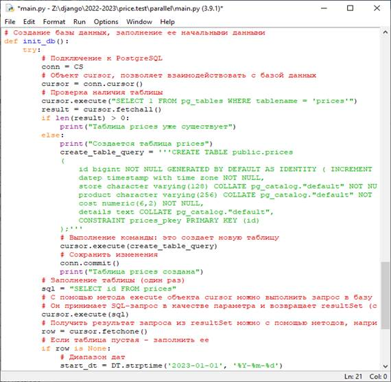
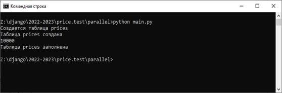

Цель практической работы:закрепление и расширение знаний, полученных обучающихся при теоретическом изучении предмета, приобретение конкретных практических навыков создания базы данных на Python.
Методические указания к выполнению работы:
База данных создается с использованием pgAdmin.
Для создания и заполнения таблиц можно также использовать язык программирования Python.
# Соединение с базой данных
CS = psycopg2.connect (user="customer", password="customer", host="127.0.0.1", port="5432", database="price")
# Создание базы данных, заполнение ее начальными данными
def init_db():
try:
# Подключение к PostgreSQL
conn = CS
# Объект cursor, позволяет взаимодействовать с базой данных
cursor = conn.cursor()
# Проверка наличия таблицы
cursor.execute("SELECT 1 FROM pg_tables WHERE tablename = 'prices'")
result = cursor.fetchall()
if len(result) > 0:
print("Таблица prices уже существует")
else:
print("Создается таблица prices")
create_table_query = '''CREATE TABLE public.prices
(
id bigint NOT NULL GENERATED BY DEFAULT AS IDENTITY ( INCREMENT 1 START 1 MINVALUE 1 MAXVALUE 9223372036854775807 CACHE 1 ),
datep timestamp with time zone NOT NULL,
store character varying(128) COLLATE pg_catalog."default" NOT NULL,
product character varying(256) COLLATE pg_catalog."default" NOT NULL,
cost numeric(6,2) NOT NULL,
details text COLLATE pg_catalog."default",
CONSTRAINT prices_pkey PRIMARY KEY (id)
);'''
# Выполнение команды: это создает новую таблицу
cursor.execute(create_table_query)
# Cохранить изменения
conn.commit()
print("Таблица prices создана")
# Заполнение таблицы (один раз)
sql = "SELECT id FROM prices"
# С помощью метода execute объекта cursor можно выполнить запрос в базу данных из Python.
# Он принимает SQL-запрос в качестве параметра и возвращает resultSet (строки базы данных):
cursor.execute(sql)
# Получить результат запроса из resultSet можно с помощью методов, например, fetchAll()
row = cursor.fetchone()
# Если таблица пустая - заполнить ее
if row is None:
# Диапазон дат
start_dt = DT.strptime('2023-01-01', '%Y-%m-%d')
end_dt = DT.strptime('2023-08-31', '%Y-%m-%d')
for i in range(10000):
# Счетчик
sys.stdout.write("\r" + str(i+1))
sys.stdout.flush()
# Команда SQL
sql = "INSERT INTO public.prices(datep, store, product, cost, details) VALUES ('" + get_random_date(start_dt, end_dt).strftime('%Y-%m-%d') + "', '"+ "Магазин " + str(random.randint(1,10)) + "', '" + "Товар " + str(random.randint(1,1000)) + "'," + str(random.randint(1,1000)) + ", '');"
# Выполнить запрос
cursor.execute(sql)
# Cохранить изменения
conn.commit()
print("\nТаблица prices заполнена")
# Закрыть объект cursor после завершения работы.
cursor.close()
# Закрыть соединение после завершения работы.
conn.close()
except Exception as error:
print(error)
##### Главная программа #####
def main():
# Инициализация таблиц базы данных
init_db()

При выполнении данной программы, произойдет создание таблицы и заполнение ее данными. Для этого в командной строке необходимо выполнить команду
python main.py

База данных готова к работе.
Задание:
Создать базу данных согласно варианту базы данных на Python.
1. Создание БД "Страховая компания".
Таблицы:
- Вид страхования (код, наименование).
- Контракты (номер, дата, сумма, тарифная ставка, код филиала, код вида страхования).
- Филиал (код филиала, наименование, телефон, адрес).
2. Создание БД "Гостиница".
Таблицы:
- Клиенты (код клиента, фамилия, имя, отчество, паспортная информация).
- Номера (код, номер, количество человек, цена, комфорт).
- Размещение (код размещения, код клиента, код комнаты, дата размещения, дата выезда).
3. Создание БД "Ломбард".
Таблицы:
- Клиенты (код клиента, имя, фамилия, отчество, удостоверение личности, срок выдачи документа).
- Категория товара (код, наименование категории товара).
- Реализация в ломбард (код, код товарной категории, код клиента, описание товара, срок реализации, срок возврата, сумма, комиссионная плата).
4. Создание БД "Агентство по трудоустройству".
Таблицы:
- Работодатель (код работодателя, наименование, вид деятельности, телефон, адрес).
- Договора (код соискателя, код работодателя, вид деятельности, комиссионная плата).
- Соискатели (код соискателя, фамилия, имя, отчество, квалификация, вид деятельности, другие сведения, сумма оплаты труда).
5. Создание БД "Распределение учебной нагрузки».
Таблицы:
- Преподаватели (код преподавателя, фамилия, имя, отчество, должность, ученая степень, стаж работы).
- Дисциплины (код, наименование дисциплины, количество часов).
- Нагрузка (код преподавателя, код дисциплины, номер группы).
6. Создание БД "Грузоперевозки".
Таблицы:
- Направления (код маршрута, название, оплата труда, расстояние).
- Водители (код водителя, фамилия, имя, отчество, стаж работы).
- Проделанная работа (код маршрута, код водителя, дата отправления, дата возвращения).
7. Создание БД «Прокат автомобилей».
Таблицы:
- Автомобили (код автомобиля, марка, цена, цена аренды, тип).
- Клиенты (код клиента, фамилия, имя, отчество, телефон, адрес).
- Выданные автомобили (код автомобиля, код клиента, дата выдачи, дата возврата).
8. Создание БД "Интернет-магазин".
Таблицы:
- Товары (код товара, наименование, цена, единица измерения).
- Клиенты (код клиента, фамилия, имя, отчество, телефон, адрес, e-mail, постоянный потребитель).
- Продажа (код продажи, код товара, код клиента, количество, дата продажи, дата доставки).
9. Создание БД "Ювелирная мастерская".
Таблицы:
- Ювелирное изделие (код ювелирного изделия, наименование, вид, код материала, вес, цена).
- Материалы (код материала, наименование, цена за грамм).
Контрольные вопросы:
1. Объект, позволяющий взаимодействовать с базой данных
2. Команда создания таблицы
3. Метод, выполняющий запрос в базу данных из Python